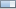

You see the Properties window for a Progress Bar component  when you select the component on a page that you are editing in the Visual Designer. Alternatively, you can select this component in the
.
This JavaServer Faces 1.2 component has the following properties.
General
id. Type: String
The name of the Progress Bar component in the page bean and the JSP file. In the page bean, the component is represented by a PropertySheet object.
Appearance
description. Type: String
A description of the task that is being monitored.
failedStateText. Type: String
Text to be displayed if the task fails. A default icon is displayed with the text.
height.Type: int
Height of the progress bar image in pixels. The default height is 14 pixels.
logMessage.Type: String
A message to be displayed in a text area at the bottom of the component.
progress.Type: int
A nunber a indicating the percentage of the total task that has been completed. Bind this property to an object that produces the required integer data.
progressImageUrl.Type: String
The URL to an image to use to indicate progress instead of the default animated progress bar.
refreshRate.Type: int
The interval in milliseconds between updates of the progress bar image.
status.Type: String
Text to be dispalyed at the bottom of the component indicating the current status of the task. For example, the status could be a string indicating the
percentage of work completed or the time remaining...
style. Type: String
Cascading Style Sheet rules (CSS level 2) to be applied to the component. For example:
position: absolute; left: 288px; top: 312px
You can enter values directly or click the ellipsis (...) button to use the Style Editor.
This property overrides any settings in the theme or the project CSS file for this component. If a style specified in this property does not appear to take effect, it is because an area of the component is obscured by a child component that has different style settings.
For a list of CSS2 style attributes, see the web page at
styleClass. Type: String
A space-separated list of CSS2 style classes to be applied when the component is rendered. The style classes must be defined in the project's style sheet or in the theme's CSS file. If you click the ellipsis button (...), you see a list of all styles you can add to this property. For information on adding CSS classes and rules to the project's cascading style sheet, see CSS Editor.
See the note above under the style property description for an explanation of why a class added to this property might appear to have no effect on the component.
If you add a CSS style class from the current theme to your project CSS file and you redefine the style class, the change affects all components that use this style class. However, you can add your own style classes to the project CSS file that redefine the default style classes, and then when you add them to this property, the changes affect only this instance of this component.
width.Type: int
Width of the progress bar image in pixels.
Behavior
toolTip. Type: String
Rendered as the HTML title attribute of the component, which is readable by a screen reader and displays as a tool tip when the user hovers the mouse cursor over the component.
If the component is not visible, the tooltip will not display in most browsers.
visible. Type: boolean
Indicates whether or not the component can be seen by the user on the rendered HTML page. This property is selected by default. If you deselect this property, the component's HTML code is rendered on the page, but the component is not visible in the browser because it is hidden by a style setting. Because the HTML code is rendered, the component can still be processed on form submissions, and users who view source in the browser can see the HTML code. In addition, your web application can use client-side JavaScript to show or hide the component.
If you need to completely hide the component, for example, because it contains sensitive information that certain users should not see, deselect the rendered property.
Accessibility
tabIndex. Type: String
Optionally specifies the position of the component in the tab order of the document, determining when the component will get focus if the user tabs through the document. The value must be an integer between 0 and 32767. Equivalent to the tabindex attribute of the HTML <input> tag.
Advanced
overlayAnimation. Type: boolean
If selected, the percent complete number from the progress property is superimposed on the progress bar animation. If not selected, this number is displayed on a line below the progress
bar. This technique is useful when space is limited.
rendered. Type: boolean
If selected, the component is to be rendered and processed on any subsequent page submission. If not selected, the progress bar does not appear on the page at all, not even as a hidden component.
taskState. Type: String
A string representing the current state of the task associated with this progress bar.
Valid values are:
not_started
running
paused
resumed
stopped
canceled
failed
completed
type. Type: boolean
The general type of progress bar. Types are as follows:
Determinate. An animated horizontal bar used to show the percentage of the task that has been completed.
Indeterminate. An animated horizontal bar used to show only that a task is progressing when it is not possible to determine the task completion percentage.
Busy. A smaller animation used where space is constrained to indicate activity for a task when it is not possible to determine the task completion percentage.